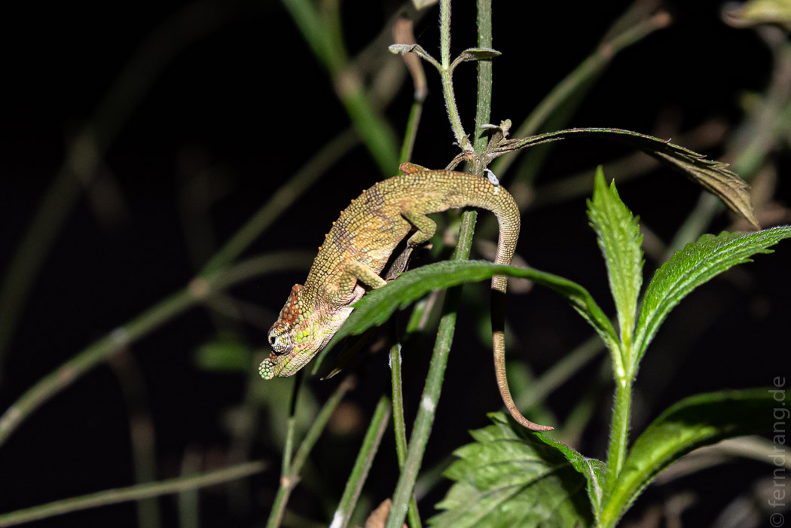

Uns stand ein weiterer Reisetag bevor. Denn unser eigentliches Ziel war der Ranomafana Nationalpark, der mit weiteren 200km eine weitere Tagesreise südlich liegt.
Die Fahrt bot in den kurvenreichen Tälern schöne Ausblicke auf die Parzellen der Reisterrassen, die von grau bis grün und trocken bis geflutet alle Phasen des Reisanbaus präsentierten. Auf den Feldern und an der Straße sieht man, dass auch die kleinen Kinder mitarbeiten. Die Größeren tragen schon Lasten oder schieben Karren, während die Kleineren die Babys tragen. Überhaupt haben wir Unmengen an Kindern gesehen. Nur die Hälfte der Bevölkerung ist erwachsen.
Nach einer Weile nahm die Dichte der Felder zum ersten Mal seit Tana ab. Zwischen den beackerten Flächen machten sich erst zögerlich dann mehrheitlich öde Graslandschaften breit. Aus den erodierten Bergkämmen ragten dicke, runde Felsbrocken hervor, die uns an die Kopjes in der Serengeti erinnerten. Davon abgesehen wurde die Fahrt etwas langatmig.
Gegen Ende der fast sechsstündigen Fahrt hat sich das Landschaftsbild schleichend aber letztlich komplett geändert. Der Ranomafana Park ist ein dichter, tropischer Regenwald. In dem ansonsten recht baumlosen Hochland sind die überwucherten Hänge der Schlucht eine Augenweide. Ein Wasserfall liegt in der Nähe des Parkeingangs und bildet das Tor zu dieser tollen Gegend.
Am Abend hat unser Fahrer schon die Führerin Chantelle für uns aufgetrieben, mit der wir einen Nachtspaziergang unternommen haben. Leider finden die seit einiger Zeit nicht mehr im Park selbst sondern entlang der Landstraße statt. Das klang nicht sehr abenteuerlich, hat sich aber dennoch wirklich gelohnt.
An den steilen Wänden wuchern Farne und üppige Büsche zwischen den Bäumen. Nach Einbruch der Dunkelheit tummeln sich dort Frösche und Chamäleons. Auf letztere waren wir besonders scharf. Tatsächlich konnten wir einige davon sehen. Die kleinsten waren nicht größer als ein Finger.
Auch klein aber noch höher im Kurs stand bei uns der Mausmaki. Die Guides haben eine Banane auf einem Baum verschmiert. (Unwiderstehlicher Geruch.) Und schon kam einer dieser superniedlichen Mini-Lemuren angehüpft. Mit riesigen Augen wurde der Bananenschleim begutachtet und gegen das gefährliche Rascheln der Ratten im Unterholz abgewogen. Banana wins! Aber mehr als ein paar Sekunden können diese nervösen Fellbällchen ohnehin nicht stillhalten. Interessanterweise gehören auf Madagaskar Ratten - stellvertretend für echte Raubtiere - zu den wenigen Schwerverbrecher, die die etwa faustgroßen Goldstücke fressen könnten. (Das Universum möge das verhindern!)